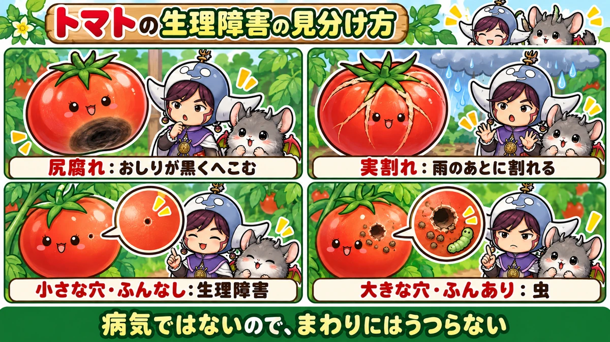

トマトの尻腐れと生理障害の決定版｜実のおしりが黒い、割れる、小さな穴。病気でも虫でもない原因と防ぎ方
📖 この記事の目次
この記事で分かること
- トマトの実のおしり（花が咲いていた側）が黒くなるのは「尻腐れ」です。病原菌による病気ではなく、実にカルシウムが十分に届かないことで起きる「生理障害」です。
- カルシウムは水に溶けて根から吸われ、水の流れにのって運ばれます。土が乾いている、気温が高い、葉が多すぎる、窒素やカリの肥料が多すぎる、といったときに、実まで届かなくなります。
- 防ぐには、乾かしすぎない（マルチや水やり）、葉を茂らせすぎない、肥料のバランスを整える、が基本です。土づくりの石灰や鶏ふんで、カルシウムそのものを切らさないことも大切です。
- 雨のあとに実が割れるのは「裂果」で、急に水を吸って実がふくらむことが原因です。熟したものから早めに収穫し、雨よけをすると防ぎやすくなります。
- 実に針でついたような小さな穴があり、ふんが見当たらないなら、カルシウム不足による生理障害のことがあります。ふんがたくさんついているなら、タバコガなどの虫のしわざです。
- なす、ピーマン、白菜、ブロッコリーなどにも、それぞれ生理障害があります。
大玉トマトが色づいてきたと思ったら、実のおしりが黒くへこんでいた。雨が上がった翌朝、真っ赤なトマトがぱっくり割れていた。小さな穴があいているので虫かと思ったら、中に虫がいない。こうした症状は、病気でも虫でもなく、トマトが育つ環境のバランスが崩れたときに起きる「生理障害」かもしれません。
生理障害は、原因が分かれば、かなり防ぐことができます。この記事では、トマトの尻腐れを中心に、実割れや穴あき、ほかの野菜で起きる生理障害まで、見分け方と防ぎ方を順番に書いていきます。
早見：トマトのよくある生理障害
尻腐れ
- 症状：実のおしり（花のあった側）が、黒や茶色に変色し、へこむ。ひどいとそこから腐る
- 主な原因：実にカルシウムが十分に届かない（乾燥、高温、葉の茂りすぎ、窒素やカリの多すぎ）
- 出やすい時期：梅雨明けから夏、実が太っていくころ
- 出やすい野菜：大玉トマトに特に多い。ミニトマト、なす、ピーマン、パプリカにも出る
実割れ（裂果）
- 症状：実の皮が、放射状や輪のように割れる
- 主な原因：雨や水やりで急に水を吸い、実の中がふくらんで皮が追いつかない。強い日ざしも関係する
- 出やすい時期：梅雨どき、夏の夕立のあと
- 出やすい野菜：トマト、ミニトマト
穴あき果
- 症状：実に針でついたような、ごく小さな穴があく。穴のまわりにふんはない
- 主な原因：カルシウム不足による生理障害とされる
- 見分け：ふんがたくさんついていて、数mmの穴なら、タバコガなどの虫
そのほか
- 空洞果：実の中に、すき間ができる
- すじ腐れ：実の表面に、色むらやすじが出る
- 窓あき、チャック果：実の表面に、ファスナーのような傷あとや、穴があく

生理障害とは
病気でも虫でもない
生理障害は、病原菌や虫が原因ではなく、気温や水、栄養のバランスなど、野菜が育つ環境に無理があるときに起きる症状です。尻腐れは「尻腐れ病」と呼ばれることもありますが、病気ではないので、まわりの株にうつることはありません。殺菌剤などの薬をかけても治りません。
原因を取り除けば、次の実は防げる
生理障害の出た実は、元には戻りません。けれども、原因を取り除けば、これから育つ実には出にくくなります。同じ株でも、上の段の実ではきれいに育つことがよくあります。
尻腐れのしくみ
カルシウムは、植物の体を丈夫にする
カルシウムは、植物の細胞のまわりの壁を丈夫にする働きがあります。人でいえば、骨を丈夫にするようなものです。カルシウムが足りないと、細胞がもろくなり、いちばん先に育っている部分から傷みはじめます。トマトの実では、おしりの部分がその場所です。
カルシウムは、水にのって運ばれる
カルシウムは、水に溶けた状態で根から吸われ、植物の体の中を、水の流れにのって運ばれます。いったん葉に届いたカルシウムは、そこから別の場所へ移りにくい性質があります。そのため、水の流れが弱くなると、育ちざかりの実の先まで、カルシウムが届かなくなります。
土にカルシウムがあっても起きる
ふつうに土づくりで石灰を入れていれば、土の中にはカルシウムがあることがほとんどです。それでも尻腐れが起きるのは、カルシウムが「足りない」のではなく、「実まで届いていない」ことが多いからです。
尻腐れが起きやすい条件
1. 土が乾いている
土が乾くと、根がカルシウムを吸えなくなります。カルシウムは水に溶けていないと吸われないからです。梅雨が明けて晴れが続き、急に乾くころに、尻腐れはよく出ます。
2. 気温が高い
暑い日には、葉から出ていく水が多くなり、水の流れが葉のほうへ集中します。そのぶん、実へ向かう水が少なくなり、カルシウムが実に届きにくくなります。
3. 葉が茂りすぎている
葉がたくさんあると、根から吸ったカルシウムの多くが葉に運ばれ、実へ回る分が少なくなります。わき芽を伸ばしたままにしたり、2本仕立てで葉が混みあったりしたときに出やすくなります。
4. 窒素やカリの肥料が多すぎる
窒素やカリの肥料が多すぎると、根がカルシウムを吸うのをじゃまします。葉ばかり茂る原因にもなります。特に、窒素の多い油かすなどをたくさん入れると、出やすくなります。
植えつけの前後も大切
尻腐れは、実が育つころに出る症状ですが、その原因は、植えつけの前の土づくりから始まっています。石灰を入れずに何年も同じ場所で作っている、油かすなど窒素の多い肥料をたくさん入れた、マルチを張らずに乾きやすい畑で育てている、といった状態が重なると、夏になって一気に出てきます。
5. 同じ場所で続けて作っている
トマトやなすなど、同じなかまの野菜を同じ場所で続けて作っていると、土の栄養のバランスが偏り、尻腐れが出やすくなる、という声もあります。
尻腐れの防ぎ方
1. 乾かしすぎない
いちばん大切なのは、土を乾かしすぎないことです。マルチを張っておくと、土の湿り気が保たれ、水やりの回数も減らせます。晴れが続いて土の中まで乾いたら、朝のうちにたっぷり水をやります。マルチのすそを持ち上げて中に水を入れたり、畝と畝のあいだにたっぷり水をまいたりすると、根のまわりまで水が届きます。
2. 葉を茂らせすぎない
わき芽はこまめに取り、下のほうの古い葉は取っていきます。葉の数が減ると、カルシウムが実に回りやすくなります。実のついている房の反対側やすぐ上の葉を1枚切ると、その葉に行くはずのカルシウムが実へ回りやすくなる、という方法もあります。
3. 肥料のバランスを整える
トマトは、窒素の多い油かすをたくさん使わず、牛ふん堆肥と鶏ふんを中心に育てると、窒素が多くなりすぎるのを防げます。鶏ふんは、カルシウムを多く含むので、トマトなど実のなる野菜に向いています。
4. 土づくりで石灰を入れる（酸度を測ってから）
植える前の土づくりで、苦土石灰などを入れると、土の酸性をやわらげると同時に、カルシウムも補えます。ただし、土の酸度を測って、すでに中性に近い場合は、石灰を入れる必要はありません。石灰と肥料は同時に入れず、石灰を入れてから2〜3週間ほどおいてから肥料を入れます。
5. 葉からカルシウムを補う
尻腐れが出はじめたときは、葉にカルシウムを吹きかけて、葉から吸わせる方法があります。尻腐れ用のカルシウム資材も市販されています。身近なものでは、石灰を水に溶かした上澄み液を薄めて使う方法や、卵のからを酢に漬けて溶かした液を薄めて使う方法も紹介されています。手作りの液は濃さが一定でないので、かなり薄めて、葉の様子を見ながら使います。

尻腐れを防ぐ水やりのしかた
土の中を確かめてから
水をやる前に、株から少し離れたところを指で5cmほど掘り、土の中の湿り気を確かめます。中まで乾いていたら、水をやるタイミングです。表面だけ乾いていて中が湿っているなら、まだ必要ありません。
朝のうちに
水やりは、朝の涼しい時間に行います。真夏の昼に水をやると、熱くなった地面で水が温まり、根を傷めることがあります。夕方の水やりは、夜のあいだ土が湿ったままになり、病気が出やすくなることがあります。
根のまわりまで届かせる
マルチを張っている場合は、植え穴から少し水を入れるだけでは、根の先まで届きません。マルチのすそを少し持ち上げて中に水を流しこむか、畝と畝のあいだの通路にたっぷり水をまくと、横からしみこんで根のまわりまで届きます。
乾かしきってから一度に、をくり返さない
からからに乾かしてから大量の水をやる、をくり返すと、実が急に水を吸って割れたり、カルシウムの吸われ方が不安定になったりします。土の湿り気をできるだけ一定に保つように、乾ききる前に水をやります。
プランターでは
プランターは、畑よりずっと早く乾きます。夏は、朝に土の表面を見て、乾いていたら鉢底から流れ出るまでたっぷり水をやります。真夏は、夕方にもう一度乾き具合を確かめます。
葉を減らすやり方
わき芽は小さいうちに
わき芽を伸ばすと、葉の数が一気に増えます。わき芽は5cmくらいの小さいうちに、晴れた日の午前中に摘み取ります。
下葉かき
実を収穫し終わった房より下の葉や、黄色くなった古い葉、地面にふれている葉を取ります。一度にたくさん取ると株が弱るので、少しずつ何回かに分けます。
実の反対側の葉を切る
大玉トマトで尻腐れが心配なときは、実のついている房の反対側にある葉、またはそのすぐ上の葉を、1枚切る方法があります。その葉に行くはずだった水とカルシウムが、実のほうへ回りやすくなる、とされます。お金もかからず、手軽にできる方法です。
土の酸度を測る
なぜ測るのか
石灰は、土の酸性をやわらげ、カルシウムを補う資材ですが、入れすぎると土がアルカリ性に傾きます。すでに中性に近い土に石灰を入れると、かえって栄養の吸われ方のバランスが崩れることがあります。石灰を入れる前に、土の酸度を測って、必要かどうかを確かめます。
測り方
ホームセンターなどで売っている、土の酸度を測る道具（土に差しこむ酸度計や、土を水に溶かして色で見る試験薬など）を使います。畝を作る場所の何か所かで測ると、畑全体の様子が分かります。
目安
トマトは、弱い酸性から中性くらいの土を好むと言われます。測った値が中性に近ければ、石灰は入れずにそのまま土づくりを進めます。酸性が強ければ、袋の表示を目安に苦土石灰を入れ、2〜3週間おいてから堆肥や肥料を入れます。
尻腐れが出てしまったら
出た実は、早めに取る
尻腐れの出た実は、元に戻りません。そのまま育てても、そこから腐ってしまうことがあります。早めに取って、株の負担を減らします。黒い部分が小さく、まだ腐っていなければ、その部分を切り取って食べることもできます。
原因を探して、手を打つ
土が乾いていないか、葉が茂りすぎていないか、最近肥料をたくさんやっていないかを確かめます。原因に合わせて、水やり、わき芽かきと下葉かき、肥料の見直しをします。急いで手を打ちたいときは、葉からカルシウムを補います。
上の段の実を守る
原因を取り除けば、上の段の実には出にくくなります。下の段に尻腐れが出たら、上の段の実を守るための合図と考えます。
実割れ（裂果）
なぜ割れるのか
晴れが続いて乾いていたところに、雨が降ったり、たっぷり水をやったりすると、トマトは急に水を吸います。実の中が急にふくらみ、皮の伸びが追いつかずに割れてしまいます。熟して赤くなった実ほど、皮がやわらかくなって割れやすくなります。
強い日ざしも原因になる
夏の強い日ざしが直接実に当たると、実の表面と中の温度や水分の差が大きくなり、割れやすくなります。わき芽を少し残して、実に日陰を作ってあげるのも、ひとつの方法です。
防ぎ方
- 熟したものから、早めに収穫する。特に雨の予報が出たら、色づいた実は先に取る
- 雨よけのビニールで、雨が直接当たらないようにする
- マルチを張り、土の湿り気を一定に保つ
- 乾かしすぎたあとに、一度に大量の水をやらない
- カルシウムが足りていると、皮が丈夫になって割れにくい、とも言われます
割れた実は
割れた実も、傷んでいなければ食べられます。ただ、割れ目から虫や病原菌が入りやすく、日持ちしないので、すぐに食べるか、加熱して使います。
ミニトマトの割れ
ミニトマトは、大玉トマトより実割れが多い品種もあります。房のまま収穫したくなりますが、熟した実から1つずつ収穫していくほうが、割れを減らせます。
鳥にも注意
熟して赤くなった実は、カラスなどの鳥にも食べられやすくなります。熟したものから早めに収穫するのは、割れを防ぐだけでなく、鳥の害を防ぐことにもなります。
雨よけの作り方
なぜ雨よけをするのか
トマトは、雨に直接当たると、実が割れやすくなり、葉に泥がはねて病気も出やすくなります。雨よけをすると、実割れと病気の両方を防ぐ助けになります。
作り方のあらまし
- トマトの株の両側に、背の高い支柱を立てます
- 支柱の上に、横に支柱を渡して、屋根の骨組みを作ります
- 骨組みの上に、透明なビニールをかぶせ、風で飛ばないようにしっかりとめます
- 側面は開けたままにして、風が通るようにします
家庭菜園向けの、トマト用の雨よけセットも市販されています。
注意すること
側面まで囲ってしまうと、中が暑くなりすぎたり、湿気がこもったりします。屋根だけにして、横は開けておきます。雨よけの下は雨が当たらないので、土が乾きやすくなります。乾き具合をこまめに確かめて、乾いていたら水をやります。
穴あき果と、虫の穴の見分け方
生理障害の穴
実に、針でついたような、ごく小さな穴があいていることがあります。穴のまわりにふんはなく、虫も見当たりません。これは、尻腐れと同じく、カルシウム不足による生理障害とされます。水不足が原因のことも多いので、土の中が乾いていたら水をたっぷりやります。
虫の穴
タバコガなどの幼虫が入りこんだ穴は、数mmほどの大きさがあり、穴のまわりにふんがたくさんついています。中を割ると、虫や、食べられたあとが見つかります。ひとつの房の実を次々に食い荒らしていくので、見つけたら穴のあいた実は取り除き、近くにいる幼虫を探して取ります。
見分けのポイント
- 穴の大きさ：針でついたくらいなら生理障害、数mmあれば虫
- ふんの有無：ふんがなければ生理障害、たくさんあれば虫
トマトのそのほかの生理障害
空洞果
実を切ると、中のゼリーの部分が少なく、すき間ができている症状です。花が咲くころの気温が高すぎたり低すぎたりして、受粉がうまくいかなかったときや、日当たりが悪いときに出やすいとされます。見た目は普通でも、持つと軽く感じます。
すじ腐れ
実の表面に、色づきの悪い部分や、すじのような色むらが出る症状です。日照が足りないときや、窒素が多すぎるときに出やすいとされます。わき芽や下葉を取って、実に日が当たるようにし、肥料を控えめにします。
窓あき果、チャック果
実の表面に、窓があいたような穴や、ファスナーのような細い傷あとが残る症状です。花ができるころの低温などで、花の形がうまく作られなかったときに出るとされます。春の早い時期に植えた株の、下の段の実に出やすい傾向があります。
乱形果
実がでこぼこと、いびつな形になる症状です。花ができるころの低温や、肥料の多すぎで出やすいとされます。
生理障害を減らす基本
どの生理障害も、根っこにあるのは、水、温度、肥料、日当たりのバランスの崩れです。土を乾かしすぎない、肥料を一度にたくさんやらない、葉を茂らせすぎず実に日が当たるようにする、植えつけの時期を守る、という基本を守ると、多くの生理障害を減らせます。
食べられるか
どの生理障害も、腐っていなければ、見た目が悪いだけで食べられます。傷んだ部分があれば切り取ります。
株の姿から分かること
茎が太すぎる、葉が大きく内側に巻く
茎が異様に太くなったり、葉が大きく茂って内側に巻いたりしているときは、窒素が多すぎることが多いとされます。この状態では、尻腐れや、すじ腐れが出やすくなります。追肥を控え、わき芽や下葉を取って、株を落ち着かせます。
先端の葉が小さく、茎が細い
株の先のほうの葉が小さく、茎も細くなってきたら、肥料が足りなくなってきたしるしです。実をたくさんつけている時期は、肥料が切れやすくなります。追肥をして、株の勢いを保ちます。
昼にしおれて、夕方に戻る
暑い日の昼にしおれ、夕方には戻る場合は、水が足りなくなりかけています。土の中を確かめて、乾いていたら翌朝たっぷり水をやります。この状態が続くと、尻腐れが出やすくなります。
ピーマン、なすの日焼け
夏の強い日ざしが当たった実の表面が、白っぽく、または茶色く焼けたようになることがあります。葉が少なくなって、実がむき出しになっているときに出やすくなります。葉を取りすぎないようにし、日ざしの強い時期は、実に葉の陰ができるようにします。
マルチの役割
土の湿り気を保つ
マルチを張ると、土の水分が逃げにくくなり、土の湿り気が一定に保たれます。尻腐れや実割れの原因になる、急な乾燥と急な吸水の差を小さくできます。
泥はねを防ぐ
雨で土がはね返ると、下の葉に泥がつき、そこから病気が出やすくなります。マルチは泥はねを防ぎ、病気の予防にもなります。
張るのは暖かい午前中に
マルチは、暖かい日の午前中に張ると、ビニールが伸びた状態で張れるので、冷えて縮んだときにぴんと張ります。寒い時間に張ると、暖かくなってたるんでしまいます。すそは土でしっかり埋めて、風で飛ばされたり、すき間から虫が入ったりしないようにします。
なす、ピーマンの生理障害
ミニトマトに少ない理由
尻腐れは、大玉トマトに特に多く、ミニトマトには比較的少ない症状です。大玉トマトは、実が大きく、育つ期間も長いので、そのぶんカルシウムを多く必要とし、実のおしりまで届けるのに時間がかかります。はじめてトマトを育てるなら、ミニトマトのほうが失敗が少ない、と言われるのは、こうした理由もあります。
なす、ピーマンの尻腐れ
なすやピーマン、パプリカも、トマトと同じく、実のおしりが黒くなる尻腐れが出ることがあります。原因と防ぎ方は、トマトと同じです。
なすが弱ってきたしるし
なすの花を見て、まん中の雌しべが、まわりの黄色い雄しべより短く引っこんでいたら、株が弱ってきているしるしです。実のつけすぎで株が疲れている（なり疲れ）ことが多いので、実を早めに収穫して株の負担を減らし、追肥と水やりで元気を取り戻させます。株の先の花が小さく、茎が細くなってきたのも、弱っているしるしです。

葉物、ブロッコリーの生理障害
白菜、キャベツの縁が枯れる（チップバーン）
白菜やキャベツ、レタスなどの葉の縁や、巻いた葉の内側の縁が、茶色く枯れたようになることがあります。これもカルシウムが葉の先まで届かないことで起きる生理障害です。乾燥や、肥料の多すぎに気をつけます。
ブロッコリーのつぼみが小さいまま（ボトニング）
株が十分に大きくなる前に寒さに当たり、つぼみができてしまうと、つぼみが小さいまま育たなくなります。植えつけの時期を守り、植えたあとに根がしっかりつくようにし、肥料を切らさないことが大切です。古く育ちすぎた苗は、根がつきにくいので避けます。
ブロッコリーのつぼみがでこぼこ（不整形花蕾）
気温が高く、つぼみの育ちが追いつかないと、表面がでこぼこで、色むらのあるつぼみになります。味はあまり変わりません。植えつけの時期を早めすぎないようにし、肥料を一度にたくさんやらないようにします。
ブロッコリーのつぼみから葉が出る（リーフィー）
つぼみの中から小さな葉が出てくる症状です。つぼみができはじめたころに高い温度に当たったり、窒素の肥料が多すぎたりすると出やすくなります。
ブロッコリーの茎が空洞になる
茎の中が空洞になる症状です。肥料が多すぎたり、気温が高かったりして、外側だけが早く育ったときに起きます。空洞のものは傷みやすいので、早めに食べます。
ブロッコリーのつぼみが一部黄色く枯れる（ブラウンビーズ）
つぼみの一部が黄色や茶色に枯れる症状です。高温や乾燥などのストレスが原因とされます。出はじめたら、早めに収穫します。
見回りで見るところ
- 実のおしり：黒い点や、へこみが出ていないか。小さいうちに見つける
- 実の表面：割れ、針でついたような穴、ふんのついた穴がないか
- 株元の土：指で掘って、中まで乾いていないか
- 葉の茂り具合：わき芽が伸びていないか、下の葉が混みあっていないか
- 株の先：葉が小さくなっていないか、茎が細くなっていないか
- 天気予報：雨の予報が出ていたら、色づいた実を先に収穫する
週に2回ほど、この順番で見ていくと、生理障害の出はじめに気づきやすくなります。
季節ごとにやること（一般的な地域の目安）
- 2〜4月：トマトを植える場所の土の酸度を測る。必要なら苦土石灰を入れて2〜3週間おき、牛ふん堆肥と鶏ふんで土を作る。マルチを張る
- 5〜6月：わき芽かきをこまめに。梅雨どきは雨よけ。色づいた実は雨の前に収穫
- 7〜8月：梅雨明けの乾燥に注意。土の中まで乾いたら朝に水やり。下葉を取る。尻腐れが出たら原因を探す
- 9〜10月：秋のブロッコリー、白菜は植えつけの時期を守る。肥料は一度にたくさんやらない
説明が分かれるところ
カルシウム資材を追肥すれば治るか
尻腐れが出たら、石灰などカルシウムを多く含む資材を追肥すればよい、と考えがちです。けれども、土の中にカルシウムがあるのに、乾燥や葉の茂りすぎで実まで届いていない場合は、カルシウムを足しても改善しません。むしろ、石灰を入れすぎると土がアルカリ性に傾き、別の問題が起きることもあります。まず水や葉の量、肥料のバランスを見直し、急ぎのときは葉から吹きかける方法を使います。
酢を使った液は効くか
酢を薄めて葉に吹きかけると、株が元気になる、という方法を紹介する人もいます。卵のからを酢で溶かした液は、カルシウムも補えるとされます。効いたという声がある一方、はっきりした効き目が確かめられているわけではありません。試すなら、かなり薄めにして使います。
水を控えると、甘いトマトになるか
トマトは、水を控えめにして育てると、実が小さくなるかわりに、味が濃く甘くなる、と言われます。一方で、水を控えすぎると、尻腐れが出やすくなったり、乾いたあとの雨で実が割れやすくなったりします。家庭菜園では、甘さを追いすぎず、土を乾かしすぎない程度に水を控える、くらいがよいでしょう。
よくある失敗
尻腐れを病気だと思って、殺菌剤をかけた
尻腐れは病気ではないので、殺菌剤は効きません。水や肥料のバランスを見直します。
乾いた土に、一度にたっぷり水をやった
尻腐れを防ごうとして、からからの土に一度に大量の水をやると、今度は実割れの原因になります。乾かしすぎないよう、ふだんから土の湿り気を保つようにします。
トマトに油かすをたくさん入れた
窒素が多くなり、葉ばかり茂って、尻腐れが出やすくなります。トマトは、牛ふん堆肥と鶏ふんを中心にします。
石灰を毎年たっぷり入れた
土がアルカリ性に傾きすぎて、かえって栄養の吸われ方のバランスが崩れることがあります。土の酸度を測ってから、必要な分だけ入れます。
2本仕立てで、葉が茂りすぎた
2本仕立てにすると葉の数が増え、尻腐れが出やすくなります。2本仕立てにするなら、下葉かきをこまめに行って、葉を茂らせすぎないようにします。
真夏の昼に、上から水をかけた
熱くなった地面で水が温まり、根を傷めることがあります。水やりは朝の涼しいうちにします。
尻腐れの実を、そのまま株につけておいた
株が、育たない実にまで栄養を使ってしまいます。また、腐ってくると、そこにかびが生えたり、虫が寄ったりします。尻腐れの実は、見つけたら早めに取ります。
赤くなった実を、雨のあとまで残した
雨で一気に割れることがあります。色づいた実は、雨の予報が出たら先に収穫します。
よくある質問
尻腐れの実は食べられますか
黒くなった部分を切り取れば、残りは食べられます。ただし、そこから腐りはじめているものは食べずに処分します。
尻腐れと、病気の実の見分け方は
尻腐れは、実のおしりから黒くなり、へこんで、表面がかたくなることが多い症状です。病気で実が腐る場合は、実のあちこちに、水がしみたような斑点や、かびが出ることが多く、まわりの葉や茎にも病気のしるしが見られます。おしりだけが黒く、葉や茎は元気なら、尻腐れの可能性が高いと考えます。
ミニトマトにも尻腐れは出ますか
出ますが、大玉トマトほどは多くありません。原因と防ぎ方は同じです。
プランターで尻腐れが出ました
プランターは土の量が少なく、乾きやすいので、尻腐れが出やすい環境です。夏は乾き具合をこまめに見て、土の表面が乾いたらたっぷり水をやります。受け皿に水をためたままにしないことも大切です。
一度尻腐れが出た株は、もうだめですか
そんなことはありません。原因を取り除けば、上の段の実はきれいに育つことがよくあります。尻腐れの実を取り、水やりや葉の量、肥料を見直して、そのまま育て続けます。
卵のからを、そのまま土に混ぜてもいいですか
卵のからにはカルシウムが多く含まれていますが、そのままでは溶けにくく、効き目はとてもゆっくりです。細かく砕いて土に混ぜれば、時間をかけて少しずつ土に溶けていきます。尻腐れが出はじめたときの急ぎの手当てには向きません。
毎年、同じ場所で尻腐れが出ます
同じ場所でトマトやなすなど、同じなかまの野菜を続けて作っていないかを見直します。できれば植える場所を変えます。場所を変えられない場合は、堆肥を入れてよく耕し、深いところの土と表面の土を入れかえるように深く耕す方法もあります。マルチと水やりで、乾かしすぎないようにすることも続けます。
カルシウム資材を葉にかけるときのこつは
商品の表示どおりの濃さに薄め、葉の表と裏にまんべんなくかけます。暑い日中を避け、朝の涼しい時間に行います。一度で終わりではなく、表示の間隔で何回かくり返します。実がまだ小さいうちから始めると、効果が出やすいとされます。
1つの株に尻腐れが出たら、ほかの株にうつりますか
うつりません。病気ではないので、まわりの株にうつることはありません。ただ、同じ畑の株は同じ条件で育っているので、ほかの株にも出やすい状態になっていることは考えられます。
学ぶ：カルシウムと水の流れ🔬
なぜ、カルシウムは実に届きにくいのか
植物の中を水が流れる力は、主に葉から水が出ていく（蒸散）ことで生まれます。葉からたくさん水が出ていくと、根から吸った水は、葉に向かって強く引っぱられます。一方、実は葉ほど水を外に出さないので、実に向かう水の流れは弱くなります。カルシウムは水の流れにのってしか運ばれず、いったん葉に届くと、ほかの場所へは移りにくい性質があります。そのため、カルシウムは葉にたまりやすく、実の先まで届きにくいのです。暑くて葉からの蒸散が多い日ほど、実へのカルシウムが不足しやすくなります。
なぜ、実のおしりから黒くなるのか
トマトの実は、つけ根のほうから水と栄養を受け取り、おしりの側は、つけ根からいちばん遠い場所です。カルシウムが足りなくなると、いちばん遠く、しかも育ちざかりのおしりの部分の細胞から傷んでいきます。そのため、尻腐れはおしりから始まるのです。
マグネシウムも大切
苦土石灰の「苦土」は、マグネシウムのことです。マグネシウムは、葉を緑色にしている葉緑素の材料になります。マグネシウムが足りなくなると、下のほうの古い葉の、葉脈と葉脈のあいだが黄色くなっていきます。実をたくさんつけたトマトやなすの、育ちの後半によく見られます。苦土石灰で土づくりをしておくと、カルシウムといっしょにマグネシウムも補えます。
なぜ、雨のあとに実が割れるのか
トマトの実の皮は、実が育つのに合わせてゆっくり伸びていきます。晴れが続いて乾いていると、実は水を控えた状態で育ち、皮も伸びる準備ができていません。そこへ雨が降ると、根から一気に水を吸い、実の表面からも水がしみこんで、実の中がふくらみます。皮の伸びがそのふくらみに追いつかず、弱いところから割れてしまうのです。熟して皮がやわらかくなった実ほど、割れやすくなります。
なぜ、肥料が多すぎるとカルシウムが吸えないのか
土の中では、カルシウムやカリ、マグネシウム、窒素の一部などが、根に吸われる順番を取りあうような関係にあります。カリや窒素の肥料が多すぎると、それらが先に吸われて、カルシウムが吸われにくくなります。肥料は、どれか1つを多くするのではなく、バランスよく与えることが大切です。
まとめ
ここまで読んでくださって、ありがとうございます！
トマトの尻腐れと生理障害のポイントを、もう一度まとめておきます。
- 尻腐れは病気ではなく、実にカルシウムが届かない生理障害。殺菌剤は効かない
- 原因は、乾燥、高温、葉の茂りすぎ、窒素やカリの多すぎ
- 防ぐには、乾かしすぎない（マルチ・朝の水やり）、わき芽と下葉を取る、肥料は牛ふん堆肥と鶏ふん中心に
- 石灰は土の酸度を測ってから。出はじめたら葉からカルシウムを補う
- 実割れは急な吸水が原因。色づいた実は雨の前に収穫し、雨よけをする
- ふんのない針穴は生理障害、ふんのある数mmの穴は虫
- なすの花の雌しべが短いのは、株が弱っているしるし
- マルチで土の湿り気を一定に。雨よけは屋根だけにして、横は開けておく
- 空洞果、すじ腐れ、窓あき果なども生理障害。腐っていなければ食べられる
トマトの実のおしりが黒くなっていたら、まず株元の土を指で掘ってみてください。乾いていたら、それが尻腐れのいちばんの手がかりです🍅
黒マルチ
土の湿り気を一定に保ち、急な乾燥と急な吸水の差を小さくします。泥はねによる病気の予防にも。


苦土石灰
土の酸度を測って酸性が強いときに。カルシウムとマグネシウムを補えます。肥料とは2〜3週間ずらして入れます。
![[商品価格に関しましては、リンクが作成された時点と現時点で情報が変更されている場合がございます。]](https://hbb.afl.rakuten.co.jp/hgb/55e75fe5.20db4cd1.55e75fe7.d1ec32cc/?me_id=1194164&item_id=10000709&pc=https%3A%2F%2Fthumbnail.image.rakuten.co.jp%2F%400_mall%2Fgardening%2Fcabinet%2Fikou_20091001_001%2Fimg1043676078.jpg%3F_ex%3D240x240&s=240x240&t=picttext "[商品価格に関しましては、リンクが作成された時点と現時点で情報が変更されている場合がございます。]")
じょうろ
土の中まで乾いたら、朝のうちにたっぷり。マルチのすそや畝間から根のまわりへ届かせます。

あわせて読みたい


次に読む
記事一覧へ